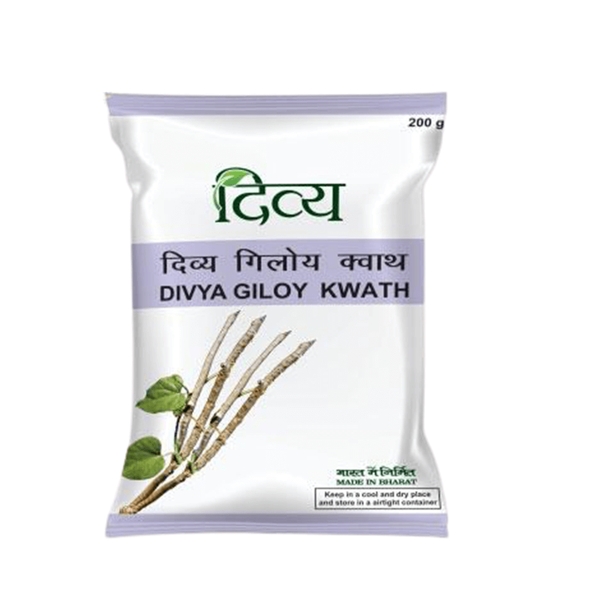
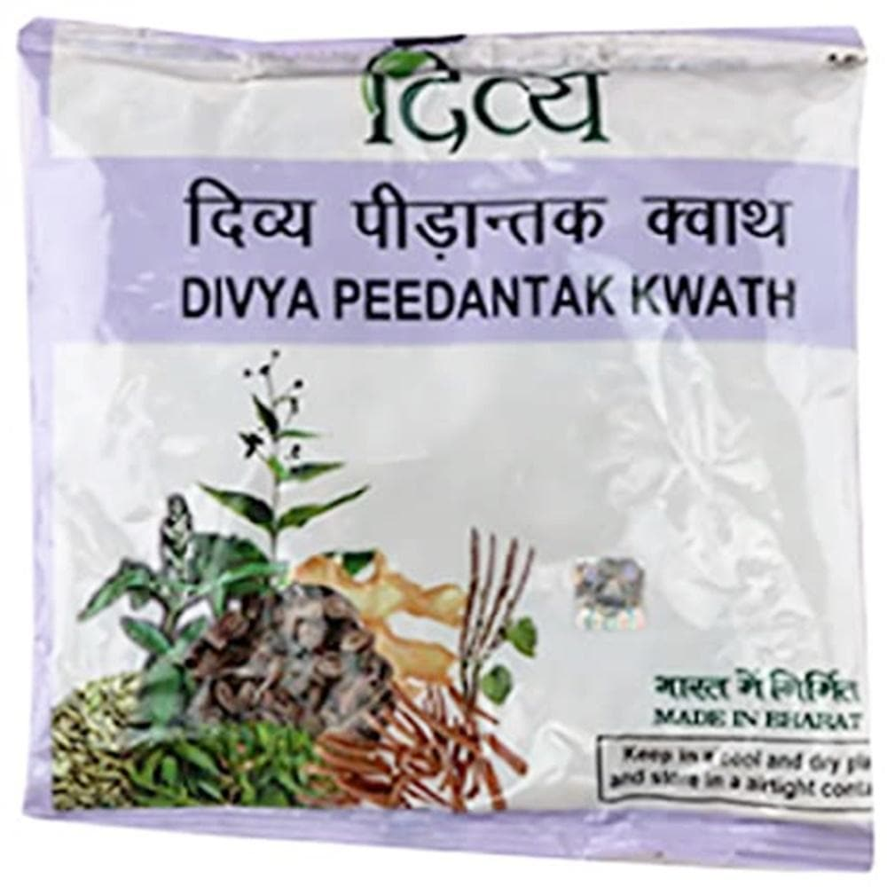
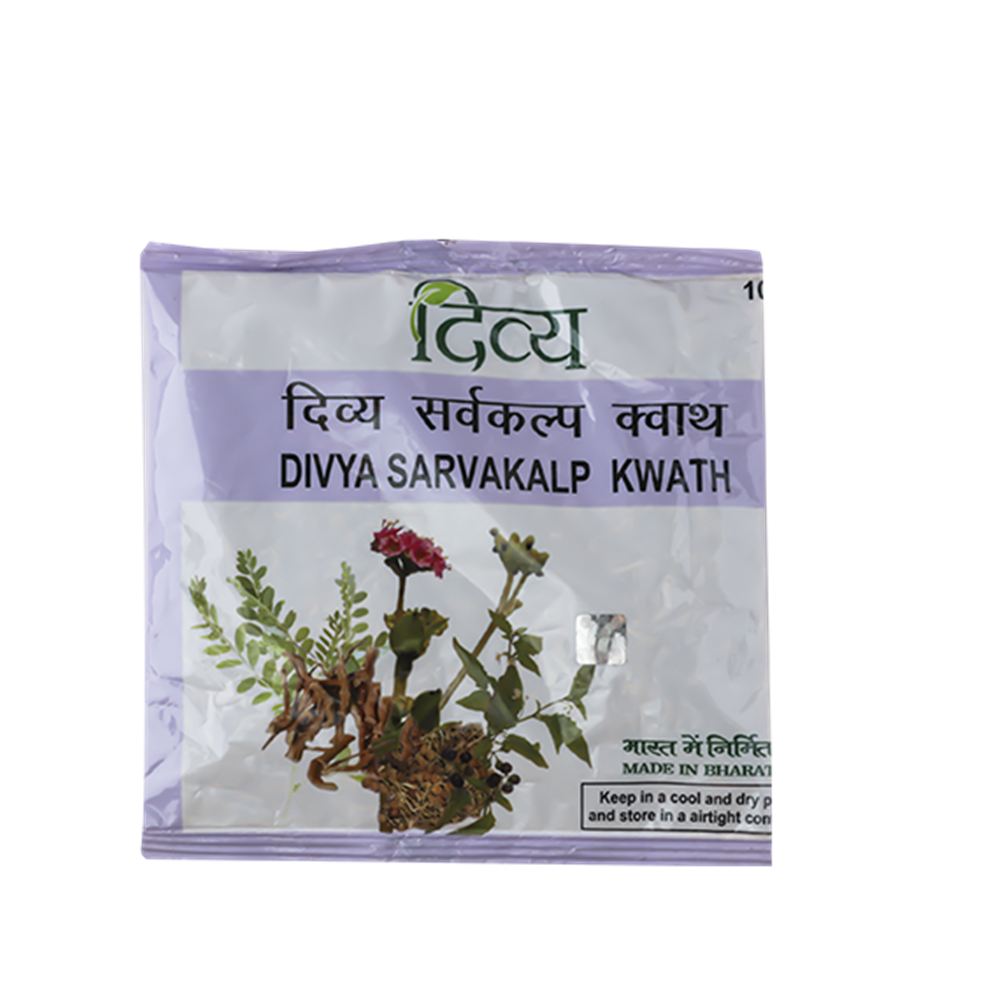
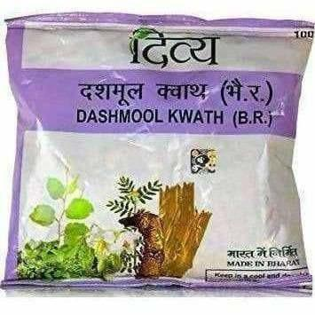

|
|
Patanjali Products Canada Inc |
Home
| IMAGES | DESCRIPTION | LINKS |
|---|---|---|
|  |
Patanjali Giloy Kwath is known to be an effective solution to viral infections. It cleans the body from within and enables proper functioning of the organs. |
|
|  |
Patanjali Peedantak Kwath Comes With The Below-Mentioned Properties.• Antifungal.• Antioxidant.• Anti-bacterial.• Anti-inflammatory. |
|
|  |
Patanjali Divya Sarvakalp Kwath is rich in natural ingredients. These include• Makoy• Punarnava• Bhumi Amla |
|
|  |
Patanjali Dashmool Kwath contains the magic of nature. This herbal supplement is known for the following properties.• Sedative• Analgesic• Antipyretic• Antioxidants |